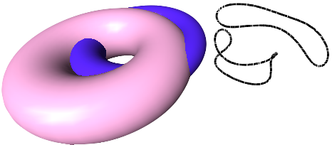

Two 3D objects surfaces intersection contours.
Let's create a set of groups of line segments by intersecting the surfaces of two toruses.
The code of creating toruses and constructing a group of line segments from their intersection looks as follows:
sgCTorus* tor1 = sgCreateTorus(2,1 ,36,36);
sgCTorus* tor2 = sgCreateTorus(2,0.6 ,36,36);
SG_VECTOR transV1 = {1,1,0};
tor2->InitTempMatrix()->Translate(transV1);
tor2->ApplyTempMatrix();
tor2->DestroyTempMatrix();
sgGetScene()->AttachObject(tor1);
tor1->SetAttribute(SG_OA_COLOR,65);
sgGetScene()->AttachObject(tor2);
tor2->SetAttribute(SG_OA_COLOR,105);
SG_VECTOR transV2 = {5,0,0.0};
sgCGroup* bool1 = sgBoolean::IntersectionContour(*tor1, *tor2);
bool1->InitTempMatrix()->Translate(transV2);
bool1->ApplyTempMatrix();
bool1->DestroyTempMatrix();
sgGetScene()->AttachObject(bool1);
bool1->SetAttribute(SG_OA_COLOR,0);
bool1->SetAttribute(SG_OA_LINE_THICKNESS,2);
See also:
sgBoolean sgBoolean::IntersectionContour
sgCGroup sgCGroup::BreakGroup sgCGroup::GetChildrenList
sgCObject::InitTempMatrix sgCMatrix::Translate sgCObject::ApplyTempMatrix SgCObject::DestroyTempMatrix sgGetScene sgCScene::AttachObject sgCObject::SetAttribute
Illustration:
